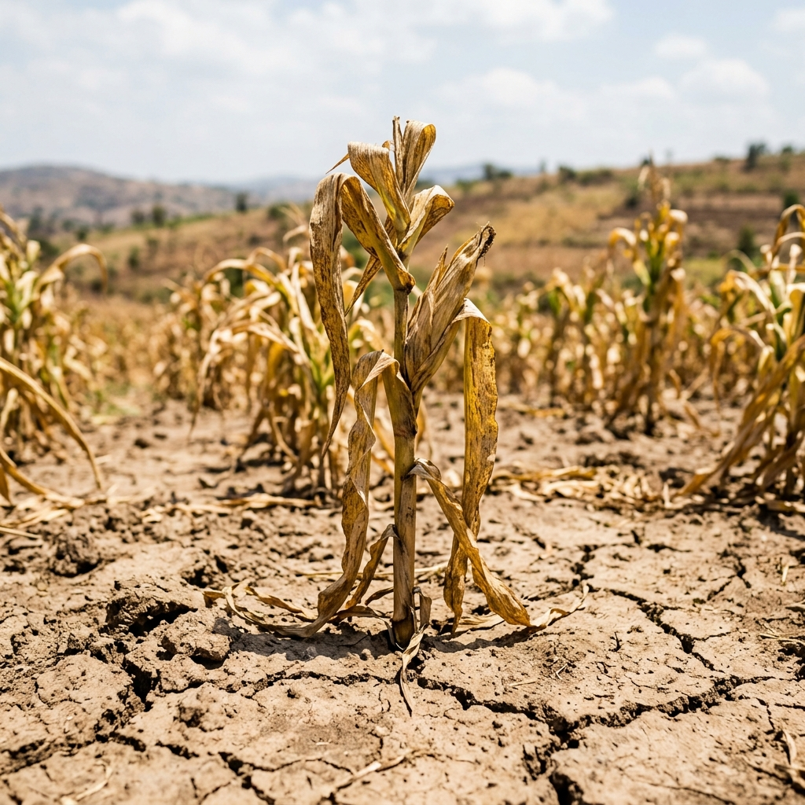
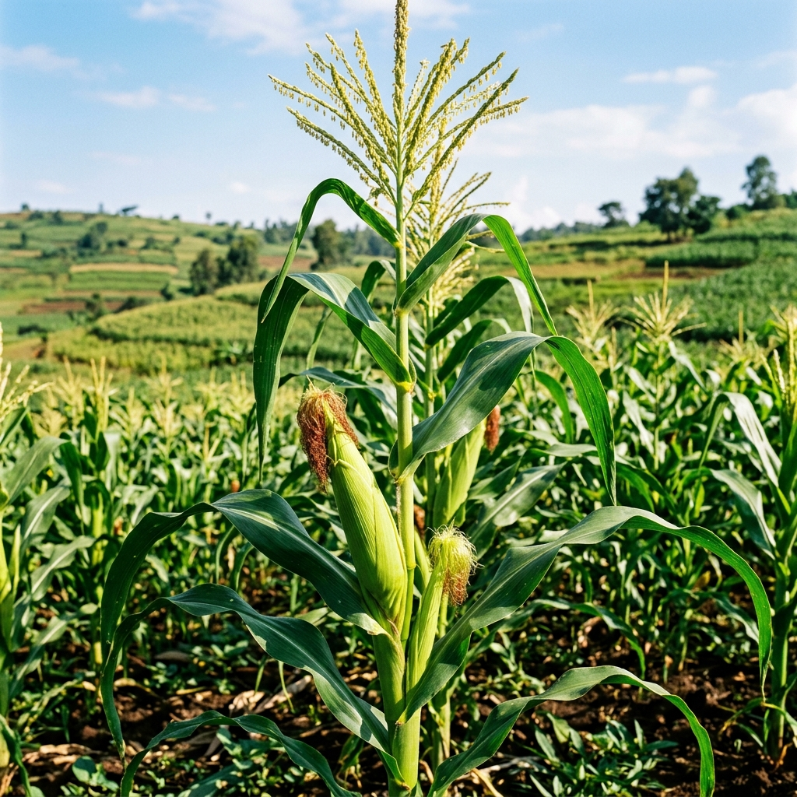

Using 22 seasons (2001–2023) of CHIRPS, ERA5-Land, and MODIS satellite data to predict end-of-season failure across Kirehe District, and leveraging the solar-powered irrigation nexus as the intervention to close the water requirement gap.
Expected satisfaction index based purely on CHIRPS/ERA5 projections.
Adjusted satisfaction after 3.3 MW solar-powered intervention.
| Member Name | Sector | Asset Volume | Population | WRSI Health | Economic Yield | Actions |
|---|
Displaying high-priority members based on mid-season water requirements. Payouts are auto-calculated for Season B.
Total Hectares × Crop Potential Yield × Optimized WRSI Health × Market Price. This is total raw market value generated from the crops before deducting any operational costs.Compute NDVI, NDWI & SPI from real Sentinel-2 bands, live simulation data, or NASA satellite streams. Generates automatic AI interpretation of current field state. Only active for selected study areas.


Feature importance ranking based on 22 seasons of Kirehe data.
Deep-dive into individual stakeholder performance. These metrics compare Baseline (Rain-fed) against Optimized (Solar-Irrigated) results across all registered fields.
Generate high-fidelity Field Analysis Reports for individual stakeholders. Reports combine satellite indices (NDVI/SPI), GIS boundaries, and ML-driven profitability forecasts.